DeepSeek-VL2：用于高级多模态理解的混合专家视觉—语言模型
论文发布日期
作者： Zhiyu Wu、Xiaokang Chen、Zizheng Pan、Xingchao Liu、Wen Liu、Damai Dai、Huazuo Gao、Yiyang Ma、Chengyue Wu、Bingxuan Wang、Zhenda Xie、Yu Wu、Kai Hu、Jiawei Wang、Yaofeng Sun、Yukun Li、Yishi Piao、Kang Guan、Aixin Liu、Xin Xie、Yuxiang You、Kai Dong、Xingkai Yu、Haowei Zhang、Liang Zhao、Yisong Wang、Chong Ruan
机构： DeepSeek-AI
摘要
我们提出 DeepSeek-VL2，一系列先进的大型混合专家视觉—语言模型。相较前代 DeepSeek-VL，它包含两项关键升级。视觉部分加入动态图块视觉编码策略，用于处理不同宽高比的高分辨率图像；语言部分采用带多头潜在注意力机制的 DeepSeekMoE，把键值缓存压缩为潜在向量，以实现高效推理和高吞吐量。模型使用改进的视觉—语言数据集训练，在视觉问答、光学字符识别、文档/表格/图表理解和视觉指代定位等任务上展示出色能力。系列包含 Tiny、Small 与标准版，激活参数量分别为 10 亿、28 亿和 45 亿。相较现有开源稠密与混合专家模型，DeepSeek-VL2 以相近或更少激活参数达到有竞争力或最先进的表现。代码和预训练模型已公开。
图 1 比较不同开源模型的平均性能与激活参数量。平均分由 MMBench v1.1、MMStar、MMMU 验证集、MathVista TestMini、AI2D 测试集和 OCRBench 准确率计算；OCRBench 分数除以 10，缩放到 0 至 100。DeepSeek-VL2 系列在参数—性能权衡上整体领先。
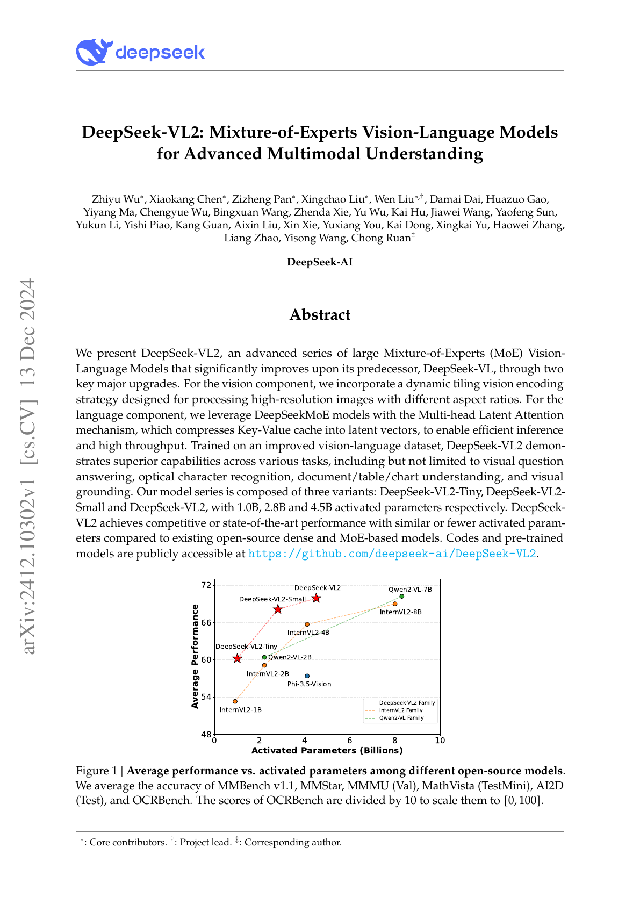
目录
论文依次介绍模型架构、数据构建、训练方法、评测和结论。数据构建包含视觉—语言对齐数据、预训练数据与监督微调数据；训练方法包含训练流水线、超参数和基础设施；评测包含多模态性能与定性研究。
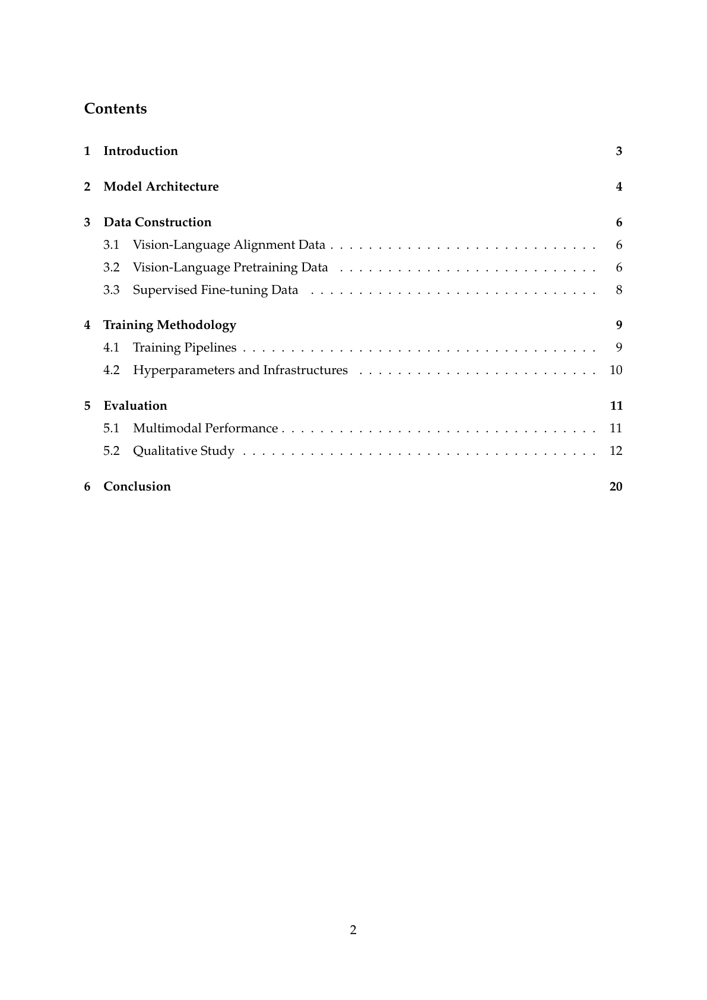
1 引言
大型视觉—语言模型已经成为人工智能中的变革力量，把大语言模型的卓越能力扩展到视觉与文本信息的无缝处理。这项进步大幅拓展了人工智能系统解决复杂真实应用的可能性，尤其是需要多模态理解的任务。
本文提出 DeepSeek-VL2，一系列使用混合专家架构的开源视觉—语言模型，相较 DeepSeek-VL 在性能与效率上均显著提升。改进聚焦三方面：（1）动态高分辨率视觉编码策略，增强视觉理解；（2）优化语言模型架构，显著提高训练与推理效率；（3）改进视觉—语言数据构建流水线，不仅提高总体性能，也把能力拓展到精确视觉指代定位等新领域。
视觉部分采用动态图块编码，高效处理不同宽高比的高分辨率图像。DeepSeek-VL 的混合视觉编码器固定以 $384\times384$ 和 $1024\times1024$ 两种分辨率提取特征，本文方法避免固定尺寸限制，在视觉指代定位、文档/表格/图表分析、详细特征提取等需要超高分辨率的任务上表现出色，同时把视觉词元数控制在可管理范围。
受成熟切片图块方法启发，系统把高分辨率输入动态切成局部图块，用共享视觉 Transformer 处理各图块，再把特征无缝集成到语言模型。这保留局部注意力视觉 Transformer 的优势，能够提取丰富特征，又不会因提高图像分辨率而承受典型的二次计算增长。
语言部分采用带多头潜在注意力的 DeepSeek 语言模型。MLA 把键值缓存压缩成潜在向量，显著降低计算成本、加快推理并提高吞吐容量。DeepSeekMoE 框架再通过稀疏计算增强效率。三个混合专家变体的总规模为 3B、16B 和 27B，激活参数分别为 0.57B、2.4B 和 4.1B。
我们还从质量、数量和多样性三方面大幅增强视觉—语言训练数据。完整数据集让模型在视觉问答、OCR、文档/表格/图表理解、视觉推理和通用聊天等广泛任务上获得更好的泛化与性能，并带来视觉指代定位、图形用户界面感知等新能力。
总之，DeepSeek-VL2 是大规模混合专家视觉—语言建模的一次显著跨越。新视觉处理策略和优化语言模型形成兼顾性能与效率的系列模型。我们开放预训练模型，希望加速领域进展并促进协作研究。
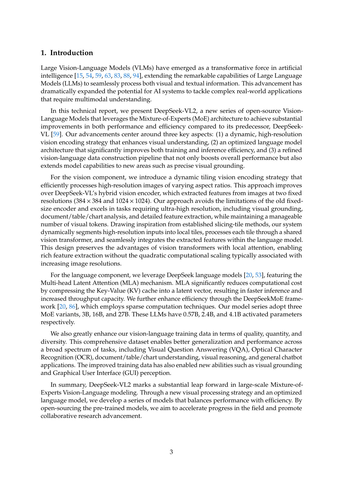
2 模型架构
DeepSeek-VL2 包含三个核心模块：（1）视觉编码器；（2）视觉—语言适配器；（3）混合专家语言模型。模型延续前代仅解码器的 LLaVA 式架构，并引入两项主要创新：动态图块策略，以及带多头潜在注意力的 DeepSeekMoE 语言模型，使高分辨率视觉输入与文本数据都能更高效处理。
动态图块策略。 原始 DeepSeek-VL 采用混合视觉编码器：SigLIP 在 $384\times384$ 分辨率提取粗粒度特征，SAM-B 在 $1024\times1024$ 提取细粒度特征。这种融合能产生适用于多类视觉—语言任务的丰富表示，但固定 $1024\times1024$ 分辨率成为限制，尤其难以处理更大分辨率或极端宽高比的图像，例如 InfographicVQA、密集 OCR 与详细视觉指代定位。
受近期 VLM 进展启发，我们把高分辨率图像切成图块，使单个 SigLIP-SO400M-384 编码器就能高效处理不同宽高比的高分辨率图像。预训练 SigLIP 基础分辨率为 $384\times384$。为适应不同宽高比，定义候选分辨率集合：
其中 $m:n$ 表示宽高比。给定尺寸为 $(H,W)$ 的输入图像，计算按原宽高比缩放到每个候选分辨率后所需的填充面积，并选择填充最少的 $(m_i\cdot384,n_i\cdot384)$。图像先缩放到长边匹配目标分辨率，再保持宽高比填充另一维。
缩放后的图像被分成 $m_i\times n_i$ 个 $384\times384$ 局部图块，另加一个全局缩略图块。SigLIP-SO400M-384 处理全部 $1+m_i n_i$ 个图块，每个图块生成 $27\times27=729$ 个 1152 维视觉嵌入。为控制计算和上下文长度，当输入多于两幅图像时关闭动态图块。
图 2 展示总体结构：视觉词元经视觉编码器与适配器进入 DeepSeek-MoE，再与文本词元共同生成回答。
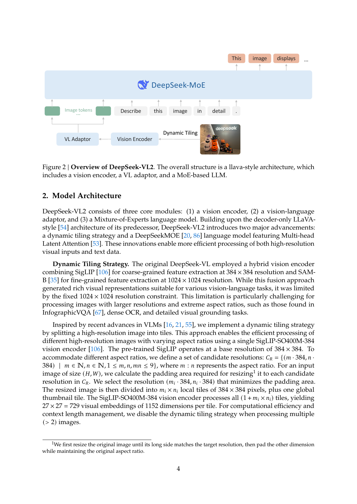
图 3 展示动态图块策略。将图像分成多个图块后，DeepSeek-VL2 相较 DeepSeek-VL 获得更强细粒度理解能力。表 1 给出三个模型变体的完整架构超参数和混合专家配置。
视觉—语言适配器。 处理视觉图块后，先用 $2\times2$ 像素重排，把每个图块的视觉词元从 $27\times27$ 压缩到 $14\times14=196$。随后在处理 $1+m_i n_i$ 个图块时加入三种特殊词元。
对 $14\times14$ 的全局缩略图块，每一行末尾加入一个“图块换行”词元，共得到 $14\times15=210$ 个词元。对排列成 $(m_i\cdot14,n_i\cdot14)$ 二维网格的局部图块，在最终列末端加入 $m_i\cdot14$ 个换行词元，表示全部局部图块中每一行结束。全局缩略图与局部图块之间再插入一个“视图分隔”词元。
完整视觉序列包含：
个视觉词元，随后通过两层 MLP 投影到语言模型嵌入空间。
DeepSeekMoE LLM。 语言模型以 DeepSeekMoE 为基础并集成 MLA。MLA 把键值缓存压缩成潜在向量，提高推理效率和吞吐容量；混合专家架构通过稀疏计算进一步提高效率。训练时为每个专家加入全局偏置项，以较低成本改善专家之间的负载均衡。DeepSeek-VL2 三个变体的激活规模分别为 1.0B、2.8B 和 4.5B，完整配置见表 1。
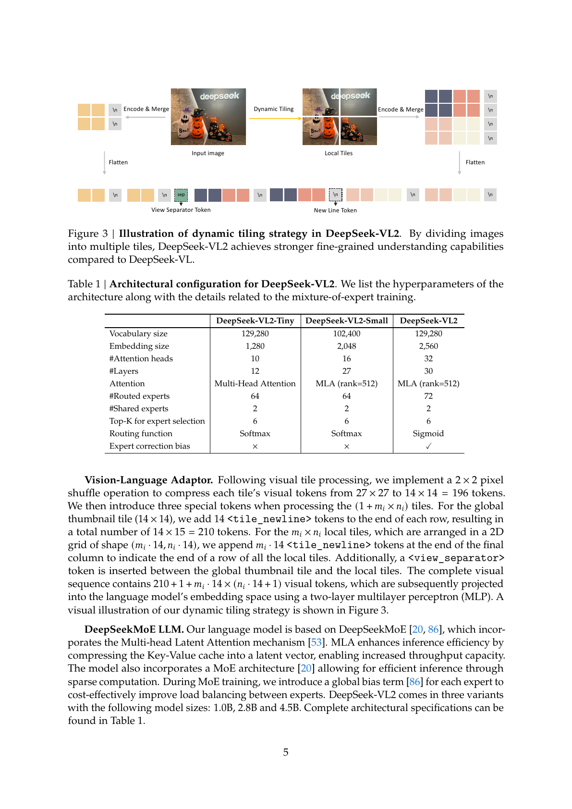
3 数据构建
我们从多种来源为 DeepSeek-VL2 构建完整视觉—语言数据集。训练分三阶段：（1）视觉—语言对齐；（2）视觉—语言预训练；（3）监督微调。下面分别说明各阶段数据。
3.1 视觉—语言对齐数据
对齐阶段训练 MLP 连接器，使预训练视觉编码器与 LLM 相连。初始预热使用 ShareGPT4V，其中约有 120 万条说明文字与对话样本。
3.2 视觉—语言预训练数据
沿用 DeepSeek-VL，预训练混合视觉—语言数据与纯文本数据，以平衡视觉—语言能力和纯文本性能。DeepSeek-VL2 维持约 70% 视觉—语言、30% 纯文本的比例，后者直接来自基础 LLM 预训练语料。
图文交错数据。 从 WIT、WikiHow 及 OBELICS 随机抽取的 30% 开源样本开始。混合比例由 DeepSeek-VL2-Tiny 初步实验确定。为增强多语言能力，在主要为英语的数据之外加入从万卷提取的中文内容，并开发内部集合以扩大通用真实世界知识覆盖。
图像说明数据。 图像说明在 VLM 训练中提供视觉与文本的直接对齐，是基础数据。我们最初使用多种开源数据集，但分析发现其质量差异严重：有的由先进 VLM 生成，密集且准确；另一些说明过短、图文不匹配或有明显幻觉。
为解决不一致问题，我们开发完整的图像说明流水线，把 OCR 提示、位置或相机设置等元信息，以及相关原始说明共同作为提示。内部说明模型采用类似 PixelProse 的策略，用不同指令引导 VLM 重新生成说明。整体质量提高后，大规模标注仍出现重复，于是再用 DeepSeek Chat 仅根据写作质量为全部说明评分，高效过滤低质量内容。
光学字符识别数据。 使用 LaTeX OCR、1200 万条 RenderedText 以及覆盖多种文档类型的大型内部 OCR 数据集。目前内部数据主要关注中英文字符识别，未来将扩展到更多语言。
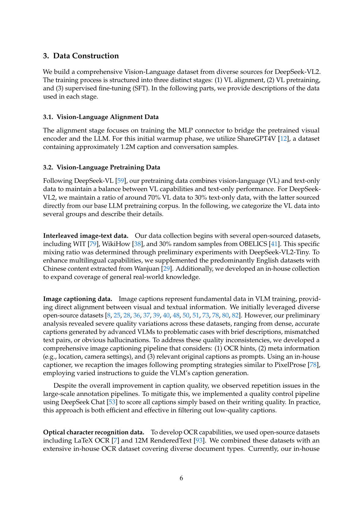
视觉问答数据。 早期探索发现通用问答数据明显有利于预训练，因此构建包含以下类别的完整视觉问答数据集：
- 通用视觉问答。 继承 DeepSeek-VL 的通用 VQA 数据。
- 表格、图表与文档理解。 使用 PubTabNet、FinTabNet 和 Docmatix 增强文档理解。
- 网页到代码与图表到 Python。 使用 Websight 训练网页转代码，并沿用 DeepSeek-VL，从公开 Jupyter Notebook 获取 Python 图表。再用 DeepSeek V2.5 复刻部分 Websight，并利用其生成的 Python 绘图代码减轻图表到代码数据噪声。
- 带视觉提示的问答。 在多项公开图像上叠加箭头、方框、圆圈和涂画等视觉指示，构建视觉提示理解数据，再围绕被标记对象生成问答对。
视觉指代定位数据。 从公开检测数据构建视觉指代定位。提示要求在图像中定位给定类别名或对象描述，回答用特殊词元包围查询和检测框列表。边界框坐标给出左上角与右下角，并按图像分辨率归一化到 0 至 999。训练时问题从候选池随机采样；还构造查询对象故意不在图像中的负样本，以提高模型稳健性。
带定位对话数据。 从公开数据生成带定位的图像描述对话，回答在自然语言中插入对象名称和归一化边界框，例如描述“两只狗正在草地上奔跑”时，同时标出“狗”的检测框。所用特殊词元和坐标归一化方案与视觉指代定位相同。
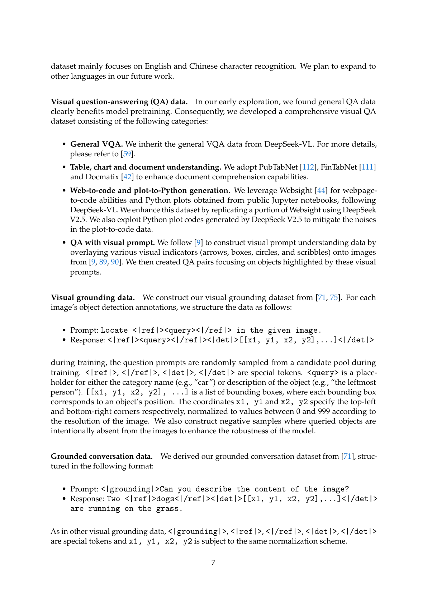
3.3 监督微调数据
SFT 数据混合多种开源数据集与高质量内部问答对。下面介绍提高其质量的工作。
通用视觉问答。 公共视觉问答数据虽然多样，却常有三项缺陷：（1）回答过短；（2）OCR 质量差；（3）含有幻觉。我们综合原问题、图像和 OCR 信息重新生成回答，实验表明所得结果更全面、准确。
开发中发现，DeepSeek-VL2 早期版本，尤其 Tiny，会偶尔在中文回答中不恰当地插入英文词；更大模型没有这一问题，说明原因可能是模型容量有限，以及视觉—语言预训练阶段中英文数据不平衡。为改善小模型，我们开发包含多样图像描述、单轮和多轮对话的内部中文问答数据，从而减轻语言混杂；另建内部数据集补充真实世界与文化视觉知识，包括动漫、表情包、美食和艺术。
OCR 与文档理解。 先进图像说明流水线已经使 DeepSeek-VL2 的 OCR 能力优于其他先进 VLM，因此 SFT 阶段不再重点加强 OCR，而是清洗已有开源数据，删除 OCR 质量差的样本。文档理解方面，从内部数据选择多样文档页面，生成面向文档理解的多轮问答；早期结果表明这能改善文档交互。
表格与图表理解。 除本身质量很高的 Cauldron 外，依据原问题为全部公共表格问答数据重新生成回答。与视觉—语言预训练阶段形成的 OCR 能力相似，模型无需额外处理便已展现很强图表理解性能。
推理、逻辑与数学。 为公共推理数据补充更详细的推理过程，并统一回答格式，把最终答案放在回答末尾。观察发现，过于详细的回答不利于较小 VLM；DeepSeek-VL2-Tiny 使用更简洁回答时表现更好。
教材与学术问题。 基于内部文档集合构建教材数据集，主要覆盖多个学科的大学水平内容。
网页到代码与图表到 Python。 在预训练所用规模之上，进一步扩充内部网页代码与 Python 绘图代码数据。
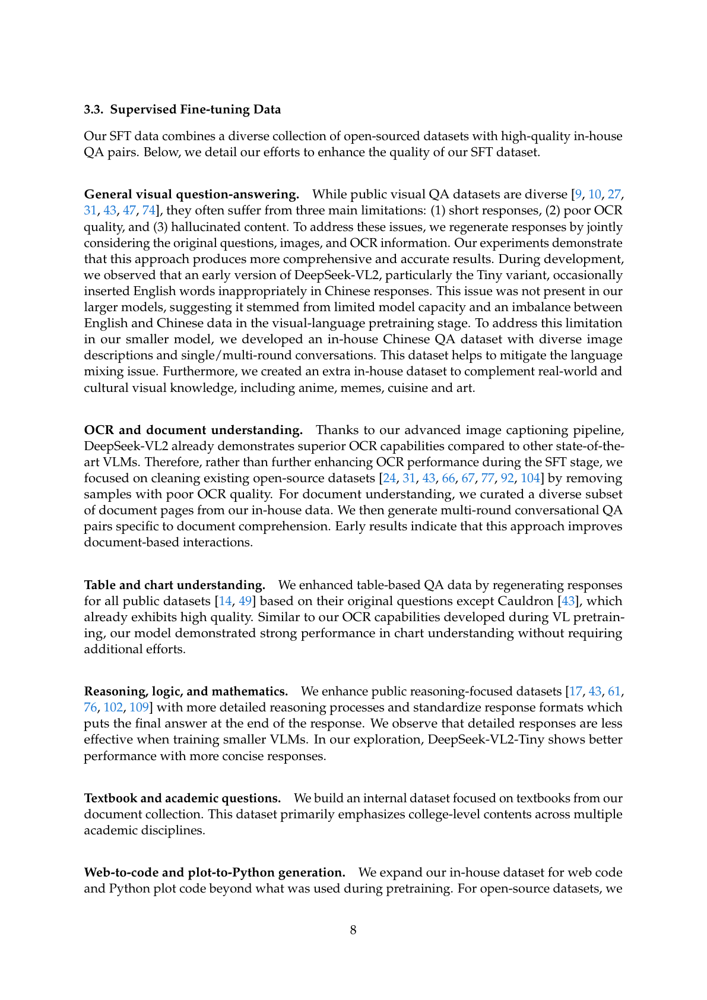
对于开源网页到代码与图表到 Python 数据，我们也通过重新生成回答提高质量。
视觉指代定位。 使用多个公开数据源构建 SFT 指代定位数据。为增强能力，把查询短语翻译成中文并增加负样本。还加入上下文视觉定位：给定第一幅图中由矩形或椭圆标出的参考对象，要求模型在第二幅图定位同类别对象。提示中的对象占位符可以表示“红色边界框内的对象”，回答则由模型给出对象描述，例如“猫”，并输出边界框。格式使用定位、指代与检测等特殊词元。
带定位对话。 使用公开数据构建带定位的对话，进一步增强预训练阶段形成的能力。
纯文本数据集。 SFT 阶段同时使用多个纯文本指令调优数据集，以维持模型语言能力。
4 训练方法
4.1 训练流水线
DeepSeek-VL2 使用三阶段流水线：
- 初始阶段用第 3.1 节图文配对数据训练视觉编码器和视觉—语言适配器 MLP，同时冻结语言模型。
- 预训练阶段用第 3.2 节数据执行视觉—语言预训练。
- 微调阶段用第 3.3 节数据执行监督微调。
预训练和微调阶段会解冻视觉编码器、适配器与语言模型的全部参数，并同时训练。所有阶段都强调视觉理解能力，只在文本词元上计算下一词元预测损失。
视觉—语言对齐。 以预训练 DeepSeekMoE 3B、16B、27B 为起点，目标是在视觉特征与语言特征之间建立稳健连接，使语言模型能够有效处理视觉输入。与保持视觉编码器和语言模型都冻结的既有方法不同，我们调整固定分辨率视觉编码器，使其适配动态高分辨率图像。该阶段优化视觉编码器与视觉—语言适配器，语言模型保持冻结。
视觉—语言预训练。 嵌入空间内完成视觉—语言对齐后，大部分计算资源用于预训练，在不同任务上发展完整联合视觉—语言知识。该阶段解冻视觉编码器、适配器 MLP 和 DeepSeekMoE LLM 的全部参数，使用约 8000 亿图文词元，显著增强多模态理解，同时保留大部分语言能力。
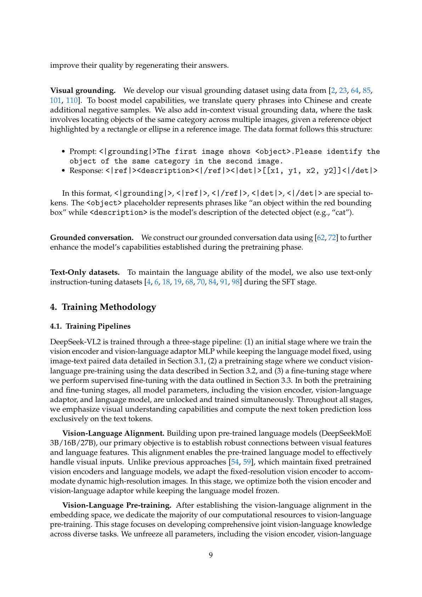
监督微调。 最终阶段通过监督微调增强预训练模型的指令遵循和对话能力。使用内部视觉—语言 SFT 数据优化全部参数，只监督回答与特殊词元，系统提示和用户提示都被遮盖。为加强对话理解，将多模态数据与 DeepSeek-V2 的纯文本对话数据结合，使模型在密集图像说明、通用 VQA、OCR、表格/图表/文档/示意图理解、视觉转代码、视觉推理、指代定位和语言理解等任务上都稳健表现。
4.2 超参数与基础设施
表 2 给出三个变体三个阶段的详细训练超参数。阶梯学习率调度器会在总训练步数 50% 和 75% 处把学习率除以 $\sqrt{10}$。
训练与评测使用面向大模型的高效轻量平台 HAI-LLM。流水线并行的显著挑战来自视觉编码器与 LLM 块不同的计算特征。视觉编码器位于模型流水线第一段，需要谨慎平衡不同 GPU 的负载，避免流水线气泡并提高 GPU 利用率。为此，我们在流水线并行中对视觉编码器进行细粒度分层。
前向与反向过程中，还在不同数据并行进程之间平衡图像图块负载，以缓解动态分辨率策略导致的图块数量不均。训练同时使用张量并行与专家并行以获得最高效率。由于有些数据批次只有文本、另一些包含图像，我们为两类数据设计不同流水线策略，并按需切换。
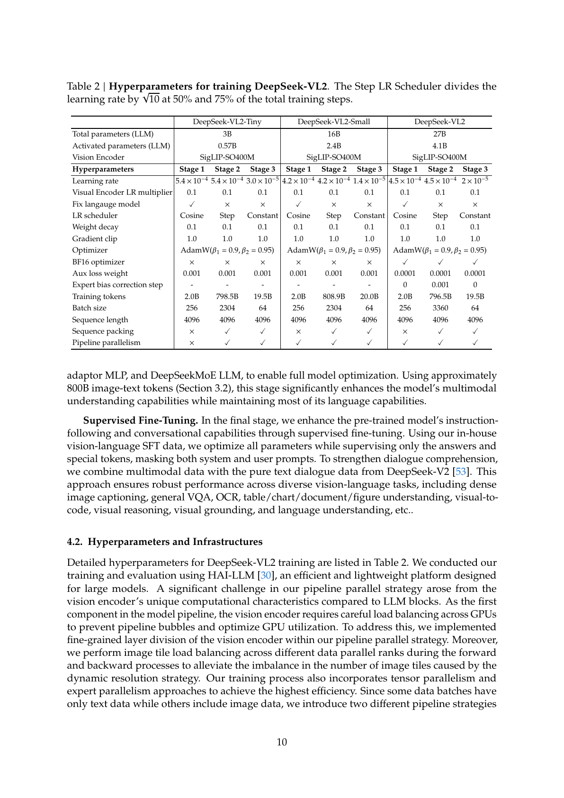
DeepSeek-VL2-Tiny、Small 和标准版分别在 16、33、42 个节点的集群上用 7、10、14 天完成训练，每节点配备 8 块 NVIDIA A100 GPU。
5 评测
5.1 多模态性能
基准。 我们在 DocVQA、ChartQA、InfoVQA、TextVQA、RealWorldQA、OCRBench、AI2D、MMMU、MMStar、MathVista、MME、MMBench、MMBench-V1.1 和 MMT-Bench 等常用基准上完整评测。这些基准从文档理解、图表解读到真实世界解题覆盖多类任务。视觉指代定位能力使用 RefCOCO、RefCOCO+ 与 RefCOCOg。
InfoVQA 含有极端宽高比和超大图像，评测时把候选分辨率集合上限从九个图块扩大到十八个图块。
表 3 比较 OCR 相关多模态基准，包括 DocVQA、ChartQA、InfoVQA、TextVQA 与 OCRBench；混合专家模型按激活参数计算。DeepSeek-VL2-Tiny 仅 1.0B 激活参数，OCRBench 达到 809；Small 以 2.8B 达到 834；标准版以 4.5B 在 ChartQA、InfoVQA 和 TextVQA 上分别达到 86.0、78.1 与 84.2。
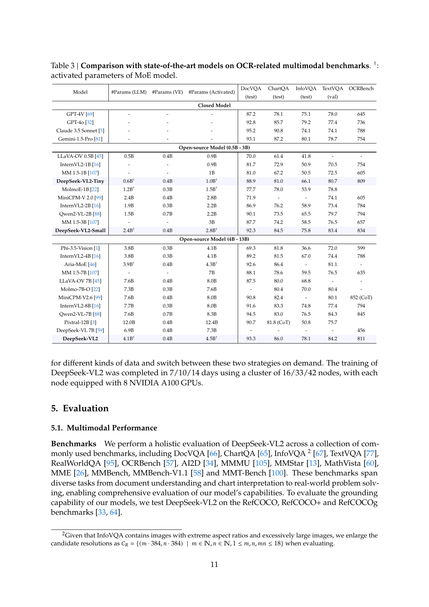
表 4 比较通用问答与数学相关多模态基准，包括 MMStar、AI2D、MMMU、MME、MMBench、MMT-Bench、RealWorldQA 与 MathVista。
与最先进模型比较。 在多模态理解基准上，我们与 LLaVA-OV、InternVL2、DeepSeek-VL、Qwen2-VL、Phi-3.5-Vision、Molmo、Pixtral、MM1.5 与 Aria-MoE 比较。表 3、4 显示，受益于混合专家架构，DeepSeek-VL2 以更少激活参数达到相近或更好的表现。
在指代定位基准上，比较对象包括 Grounding DINO、UNINEXT、ONE-PEACE、mPLUG-2、Florence-2、InternVL2、Shikra、TextHawk2、Ferret-v2、MM1.5 与 Qwen2。DeepSeek-VL2 在相近规模 VLM 中表现更好。
5.2 定性研究
本节展示 DeepSeek-VL2 从通用问答到视觉故事创作和视觉指代定位的不同能力。
通用视觉问答。 得益于新视觉—语言预训练集和多样 SFT 数据，DeepSeek-VL2 的通用视觉问答显著增强。模型擅长密集图像描述，能识别常见地标、通用视觉知识和中英文富文本；图表理解也表现良好，属性识别准确。图 5 还展示更强的表情包理解：模型可以描述正确语境，并结合有意义的文化背景解释幽默。
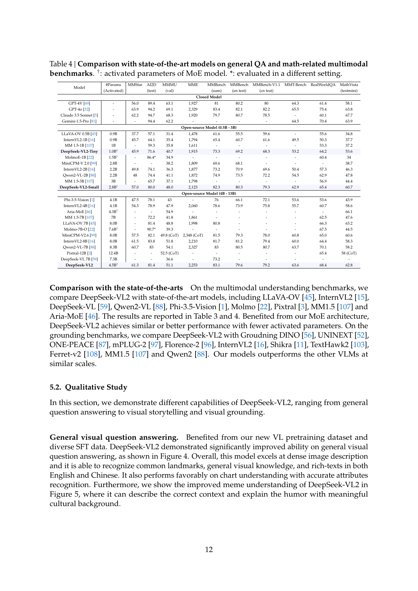
图 4 展示通用问答的多面能力，包括识别地标、看图作诗、回答常识、理解图表与识别文字。示例中，模型能介绍地标、根据自然景观写中文诗、解释《猫和老鼠》主题蛋糕的文化背景、分析多语言数据集曲线，并读取中英文招牌内容。
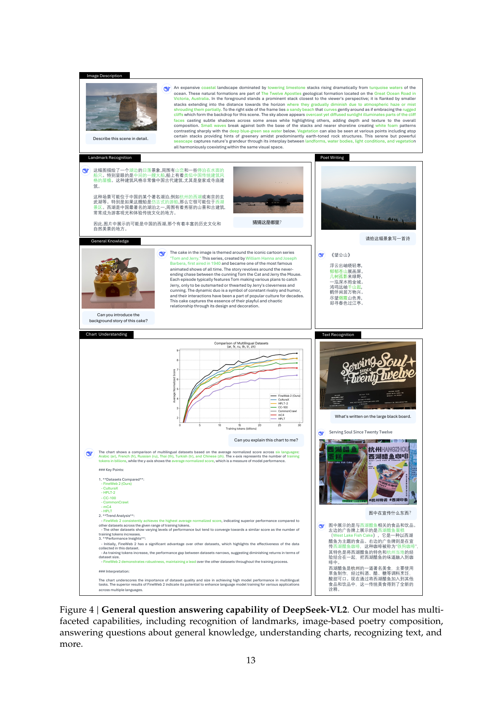
图 5 展示表情包理解。模型分别解释博士生即使度假仍想着工作、儿童违反母亲指令咬蛋糕、试图“钉住”即将结束的假期，以及备考充分却被第一题击中的反差幽默，能结合图像动作、文字内容和文化背景给出有条理分析。
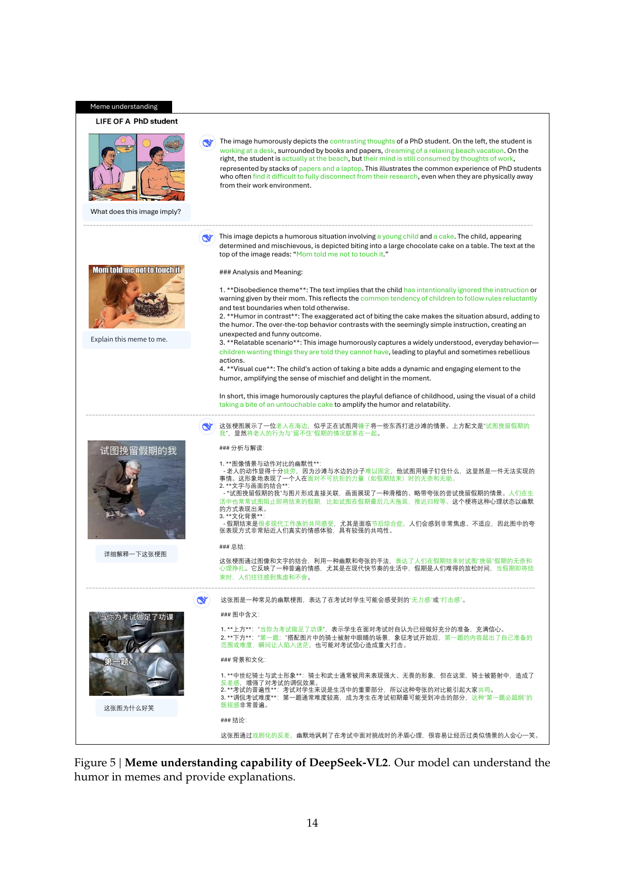
多图对话。 图 6 显示模型理解多幅图像之间的关系并据此推理。英语示例结合用户午餐和偏甜口味，从多个饮品候选中选择奶昔；中文示例识别胡萝卜、玉米和猪肋排，生成完整菜谱。
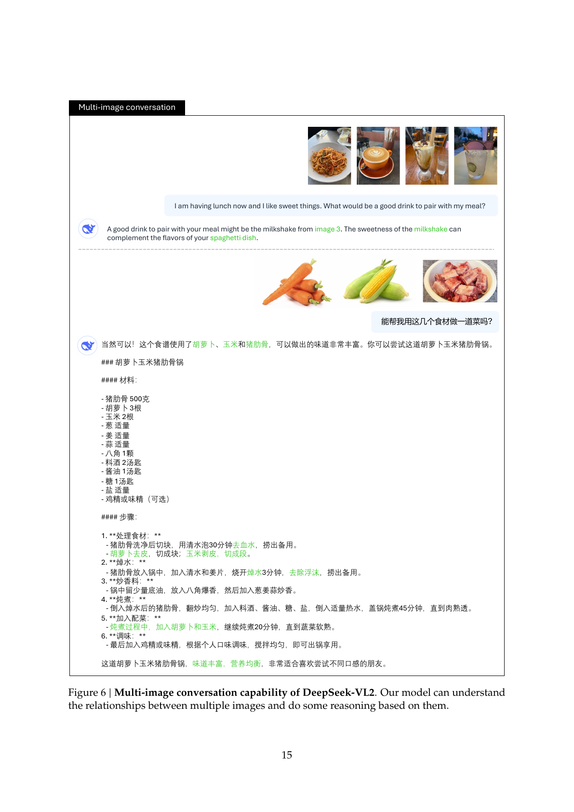
视觉故事创作。 图 7 显示模型接收多幅图像，并以中文或英文围绕图像内容组织连贯故事。英语示例从巴黎机场、飞机、凯旋门和《蒙娜丽莎》构成旅行叙事；中文示例用雪地老鼠、玫瑰、巫师和阳光田野创作《雪夜的奇遇》。
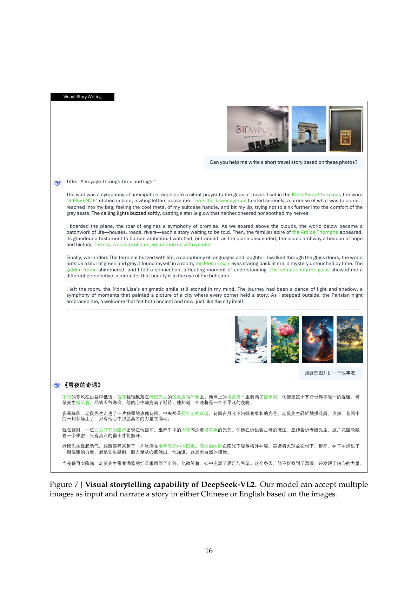
表 5 比较视觉指代定位基准。三个规模的 DeepSeek-VL2 在相近规模多模态大模型中都取得最佳结果；标准版在 RefCOCO 验证集、testA、testB 上分别达到 95.1、96.7、92.7，在 RefCOCO+ 上达到 91.2、94.9、87.4，在 RefCOCOg 上达到 92.8、92.9。
多图对话。 DeepSeek-VL2 能分析多幅图像的联系与差异，并结合其内容进行简单推理，例如根据若干食材图像思考如何烹饪一道菜。
视觉故事创作。 给定几幅图像，模型能够创作故事。写作由地标识别、OCR 等通用视觉能力支撑。故事能力最初来自已经过良好安全对齐的纯文本 DeepSeek Chat，因此内部测试没有观察到明显有害或不适宜内容。不过，真实故事创作需要恐怖、喜剧、动作等更多类型，以及幸福或悲剧等不同结局，这可能与 LLM/VLM 安全要求产生内在冲突。未来将探索在考虑这些挑战的同时扩大故事创作范围。
视觉指代定位。 这是 DeepSeek-VL2 新增能力。图 8 展示通用定位。虽然训练图像大多来自自然场景，指代表达主要是对象类别名或具体描述，模型仍能泛化到表情包、动漫等场景，还能识别特定名人和抽象概念。
图 10 展示上下文视觉定位：第一幅图以视觉提示指出一个对象后，模型可以在第二幅图定位同类别对象。模型还表现出涌现能力，能够结合第一幅图和文本描述，在第二幅图中识别对应对象。
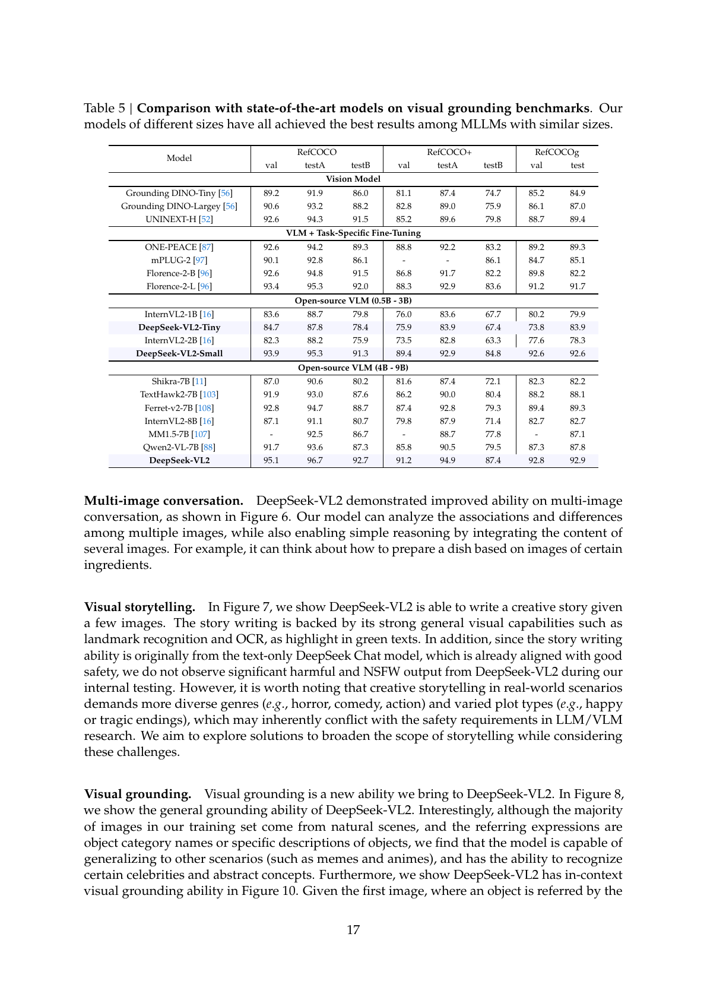
图 8 的示例覆盖自然场景、网页界面与截图、表情包和动漫。查询可以是类别名、对象描述或抽象概念，模型会输出相应对象的边界框；它能定位西瓜片、太空针塔、爱因斯坦、后排长颈鹿、通知按钮、DeepThink 按钮、孙悟空和葫芦娃等目标。
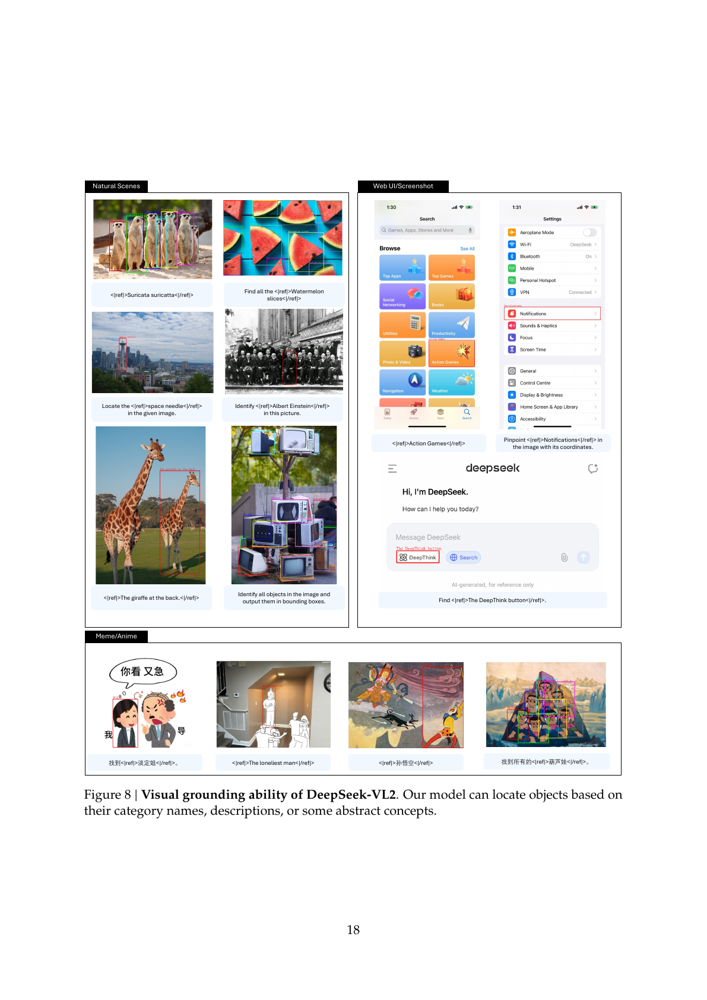
带定位对话。 使用特殊“定位”词元，DeepSeek-VL2 可以在回答中引用关键对象并给出准确位置，如图 9 所示。这使模型更好地与真实世界交互，为具身智能、计算机或手机智能体等领域提供机会。
图 9 的示例把推理与定位结合：模型会指出用来降温的风扇、推荐给无花果爱好者的蛋糕、与世界和平问题相关的炸弹，以及扔垃圾所需的垃圾桶。图 10 则展示跨图定位，包括寻找同类对象、判断第一幅图出现最多的水果并在第二幅图中定位，以及依据第一幅图的食材在第二幅图寻找相应菜肴。
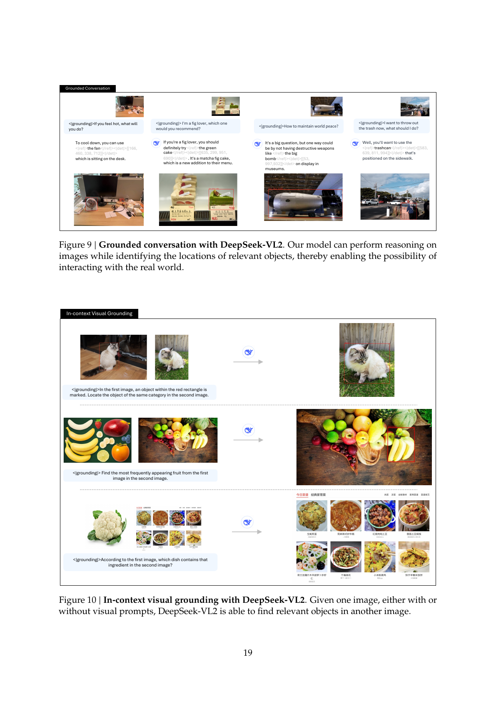
6 结论
本文提出 DeepSeek-VL2，一组增强的混合专家视觉—语言模型，总参数规模为 3B、16B、27B，对应激活参数 1.0B、2.8B、4.5B。这种配置使训练与推理计算都更高效。三个模型分别可以部署在显存为 10GB、40GB、80GB 的单块 GPU 上。动态图块视觉编码策略能够高效处理不同宽高比的高分辨率图像。通过开放代码与预训练模型，我们希望推动视觉和语言交叉领域进一步发展与应用。
局限与未来工作
虽然 DeepSeek-VL2 在多类任务上能力很强，仍有若干改进方向。目前上下文窗口只允许每次聊天包含少量图像；下一版本计划扩展上下文，以支持更丰富的多图交互。与其他现有 VLM 一样，模型偶尔难以处理模糊图像或未见对象，未来需要提高稳健性。最后，DeepSeek-VL2 擅长视觉感知与识别，但推理能力仍有加强空间。这些问题将指导后续研究。
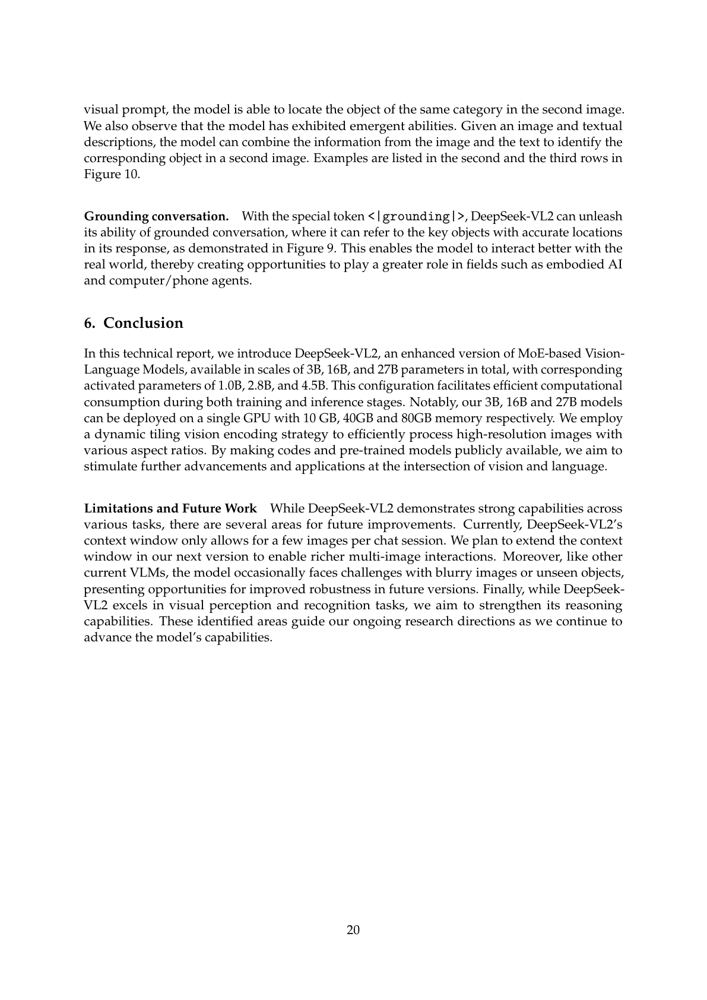
参考文献（原文截图）
参考文献中的作者姓名、英文题名、出版信息与链接按原论文准确保留。
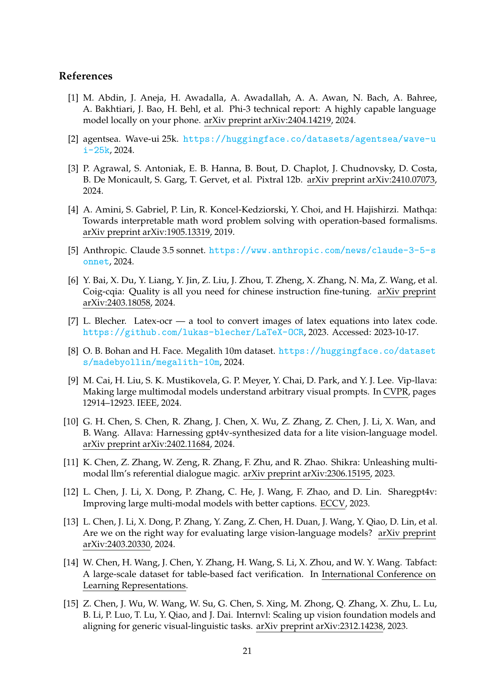
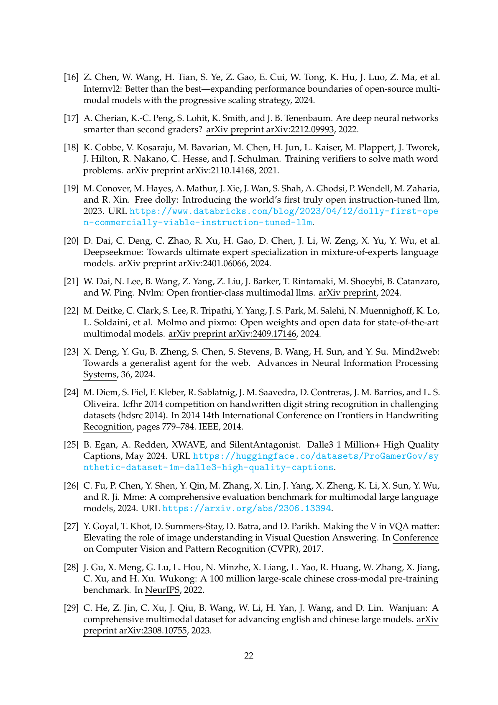
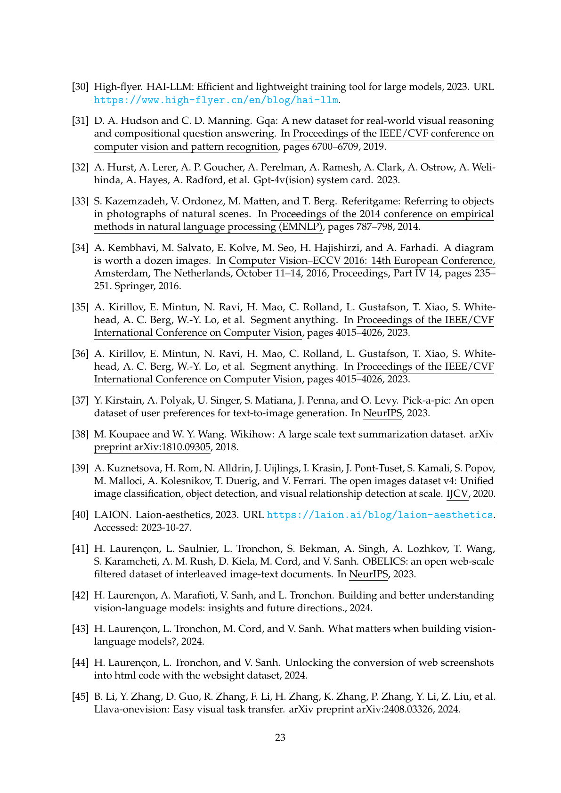
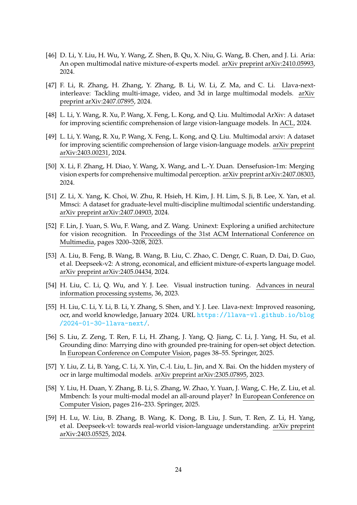
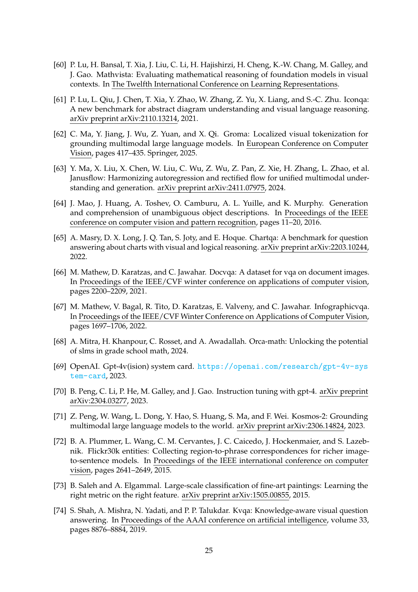
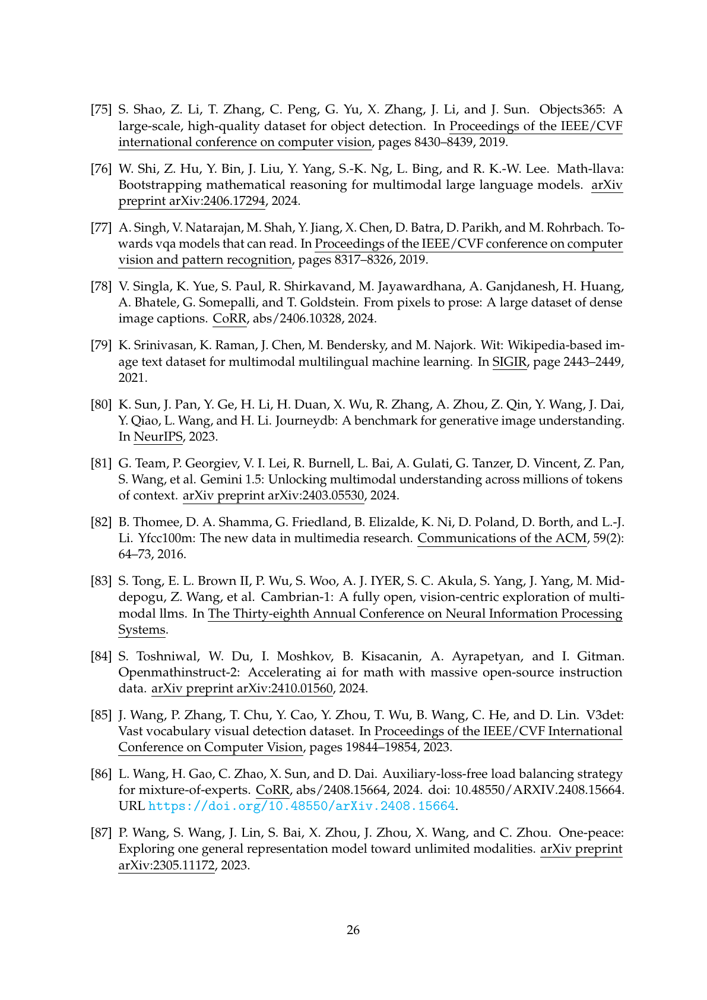
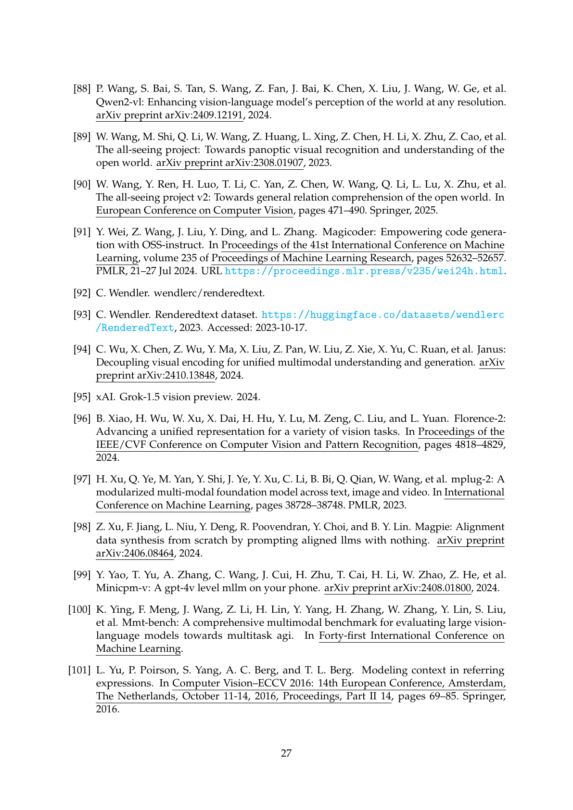
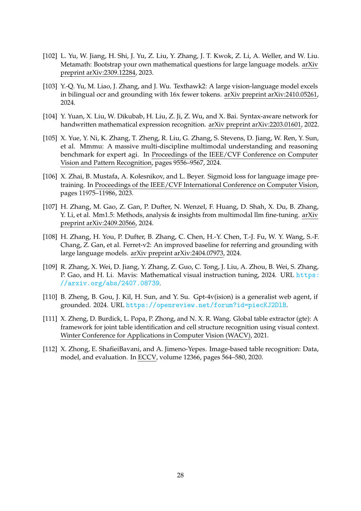